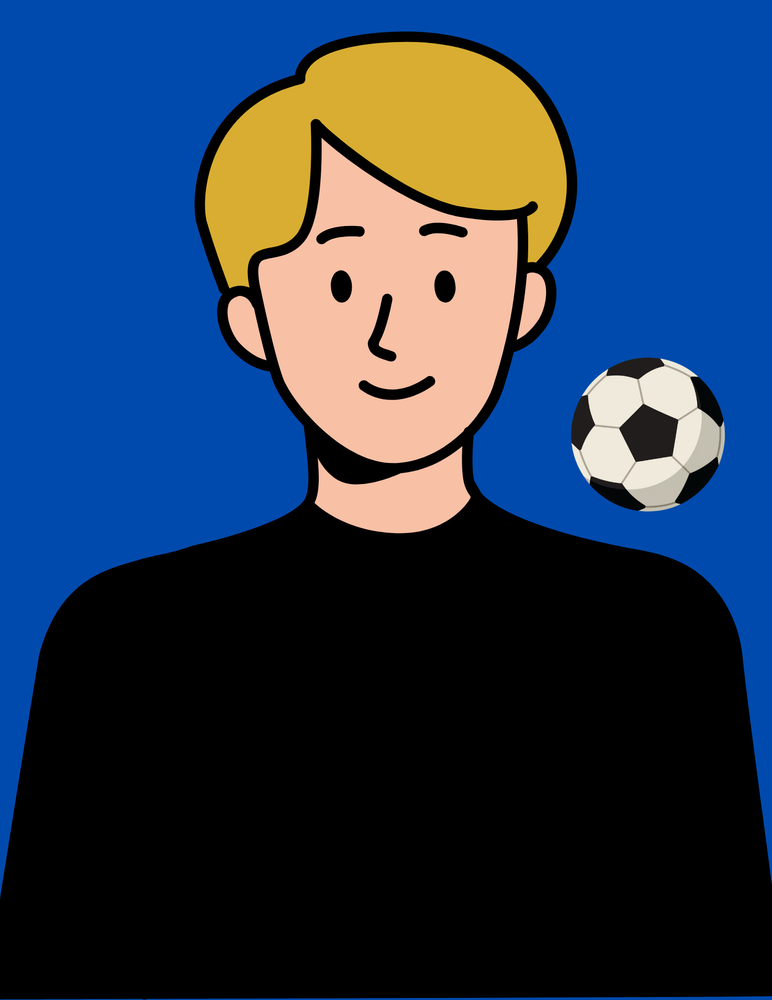

Sebastien Arnal

Hi, my name is Sebastien and I'm in the game development department.
Hello, my name is Sebastien and I'm 14 years old. I am a student at Sutherland Secondary School.

Hi, my name is Sebastien and I'm in the game development department.
Hello, my name is Sebastien and I'm 14 years old. I am a student at Sutherland Secondary School.